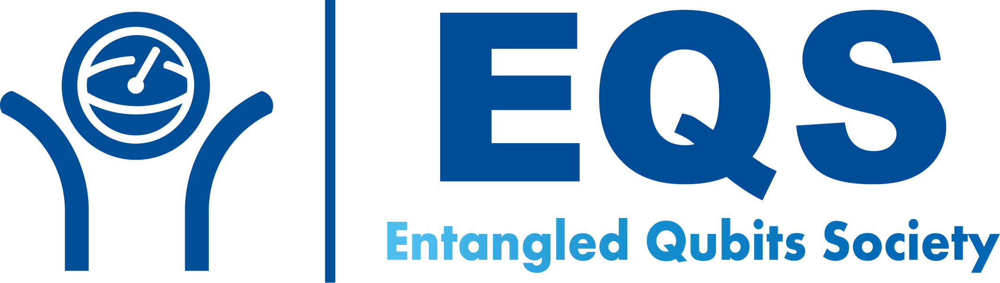
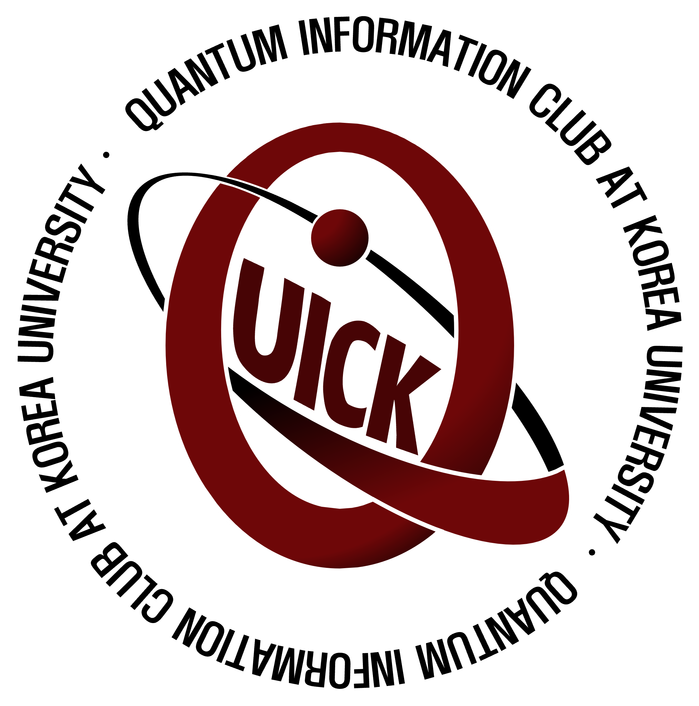
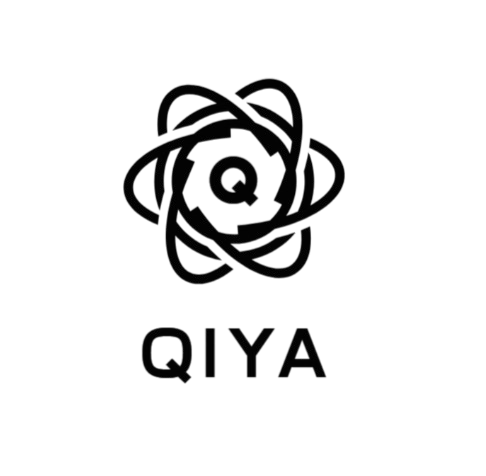

회원 동아리
Member Clubs
아래를 좌우로 넘겨서 각 동아리를 하나씩 보실 수 있습니다.
Swipe left/right to see each club individually.
SQRT (서울대학교)
SQRT (Seoul National University)
설립: 2022년 9월
Established: September 2022
Website |
Email

EQS (KAIST)
EQS (KAIST)
설립: 2022년 9월
Established: September 2022
Website |
Email

QUICK (고려대학교)
QUICK (Korea University)
설립: 2023년 3월
Established: March 2023
Website |
Email

QIYA (연세대학교)
QIYA (Yonsei University)
설립: 2024년 9월
Established: September 2024
Website |
Email
임원 소개
Leadership Introduction
아래를 좌우로 넘겨 1명씩 자세히 보실 수 있습니다.
Swipe left/right to view each person in detail.